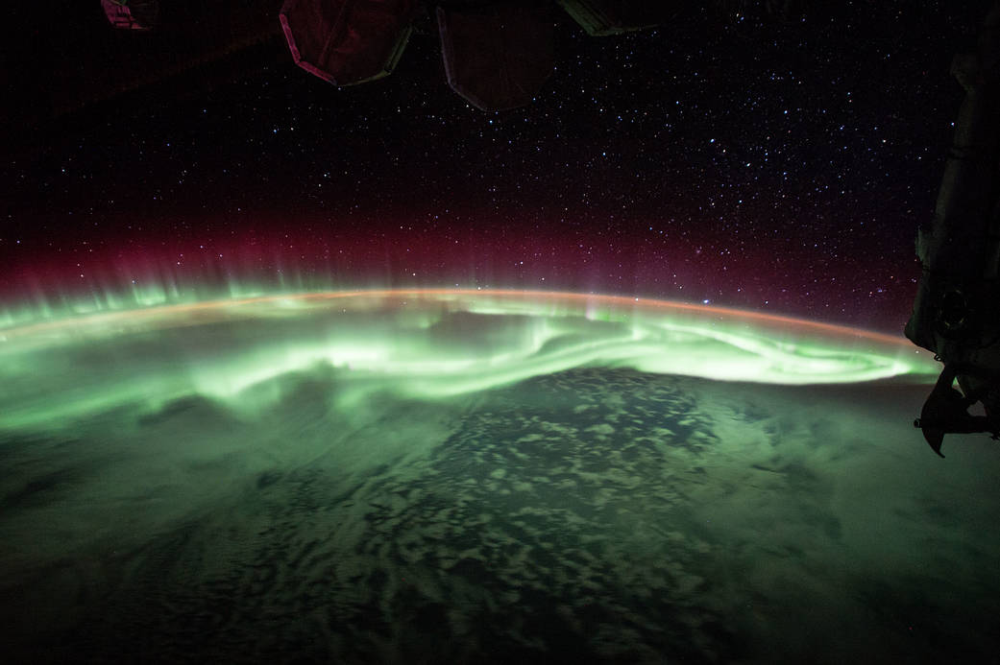
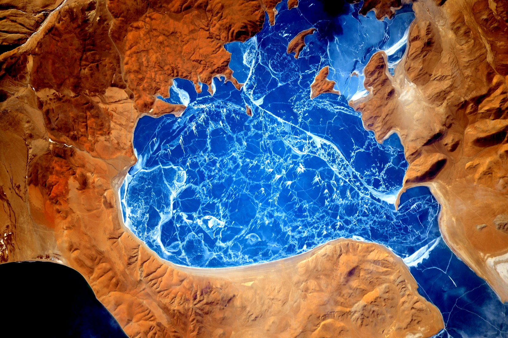

Earth Photos Taken From The ISS
Nasa astronaut Jack Fischer snapped this shot of a glowing green aurora during Expedition 52 aboard the ISS. Credit: NASA
-->
This electrifying shot of a frozen lake in the Himalayas was snapped by NASA astronaut and Expedition 46 crew member Scott Kelly during his historic year in space. Credit: NASA
This colorful image of the French Coast was taken by Expedition 44 crew member and astronaut Scott Kelly. Credit: NASA
Awesome blog post title
Praesent id metus massa, ut blandit odio. Proin quis tortor orci. Etiam at risus et justo dignissim congue. Donec congue lacinia dui, a porttitor lectus condimentum laoreet. Nunc eu ullamcorper orci. Quisque eget odio ac lectus vestibulum faucibus eget in metus. In pellentesque faucibus vestibulum. Nulla at nulla justo, eget luctus.